Teil 1: Kontrast
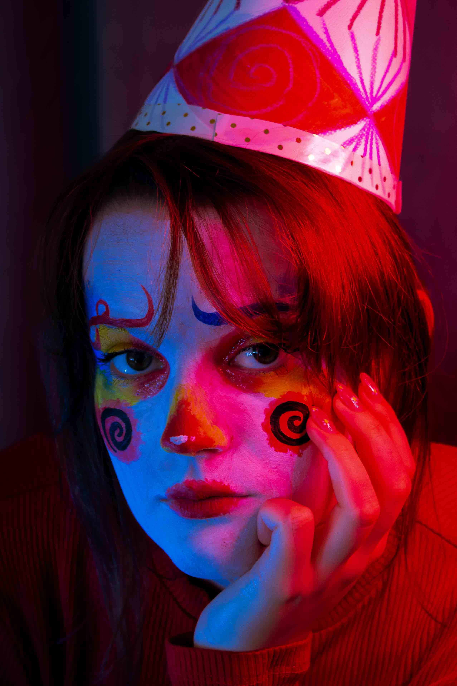
Der Kontrast zwischen warm und kalt soll zusammen mit dem traurigen Gesichtsausdruck eine starke emotionale Wirkung erzeugen.
Teil 2: Im Fokus
Im zweiten Teil spielt der Beleuchtungskontrast weniger eine Rolle. Hier ging es mir primär darum, die Person und das MakeUp in den Fokus zu stellen. Vom Gesicht im Detail zum Körper als ganzes.
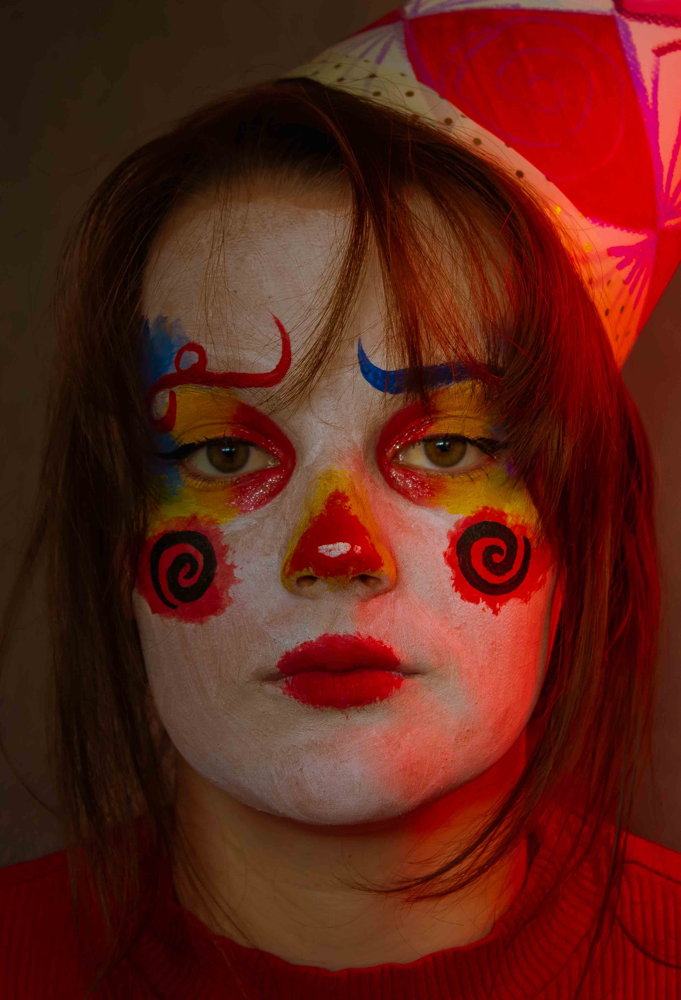
Nahaufnahme und Portrait. Im Fokus steht hierbei das Gesicht und MakeUp.
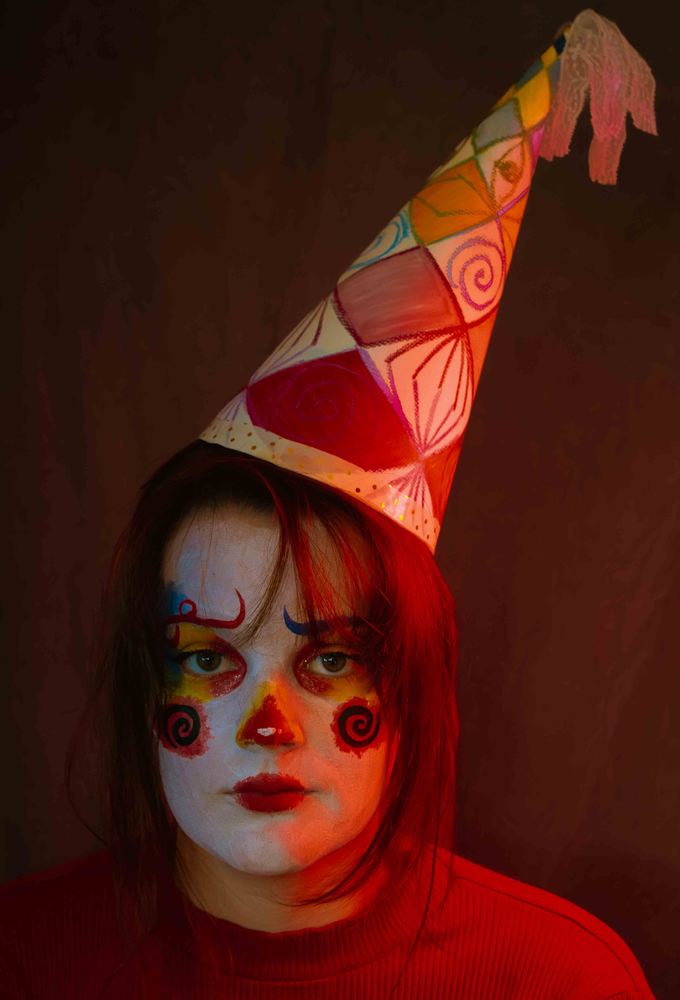
Etwas weiter raus gezoomt. Das Gesicht weiterhin im Detail, jedoch auch der Hut als Accessoire im Fokus. Die leichte Schräge des Hutes betont zudem die Mimik noch etwas mehr. Das träge und melanchonische wird weiter betont.
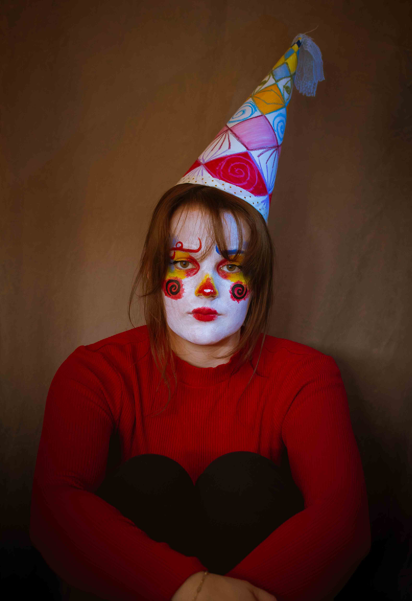
Hier die Person als ganzes. Man sieht neben dem Gesichstsausdruck und dem Hut auch die Körperhaltung sowie die Kleidung.
Teil 3: Einnahme des Raumes
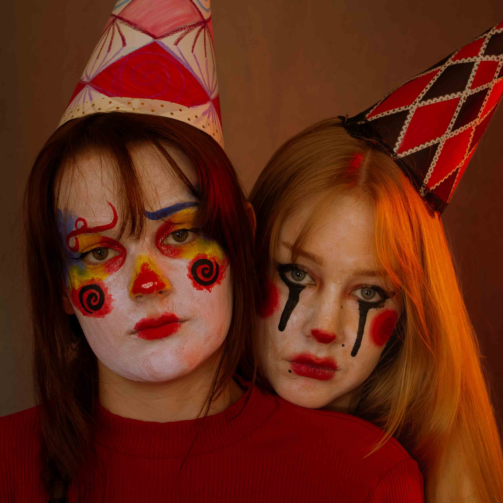
Zu der vorherigen Person stößt nun eine weitere Person bei. Die beiden schauen direktem Blick in die Kamera. Durch das rasten auf der Schulter steht Person 2 jedoch noch hinter Person 1.
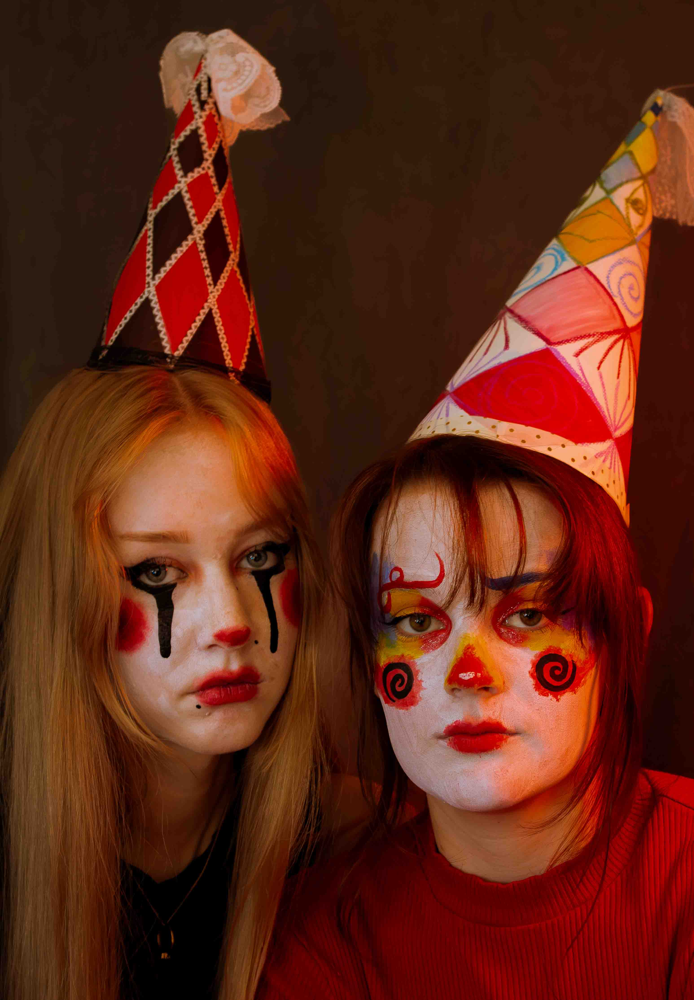
Person 2 bewegt sich weiter in den Vordergrund. Nun stehen beide im Einklang nebeneinander.
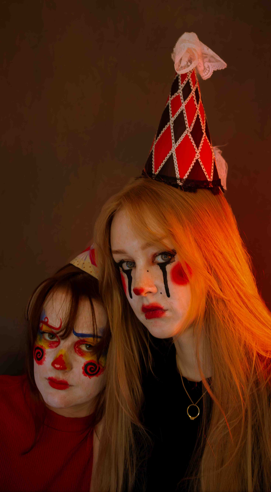
Person 2 steht nun im Vordergrund. Person 1 zieht sich weiter in den Hintergrund zurück und verschwindet hinter Person 2.
Teil 4: Im Wechsel
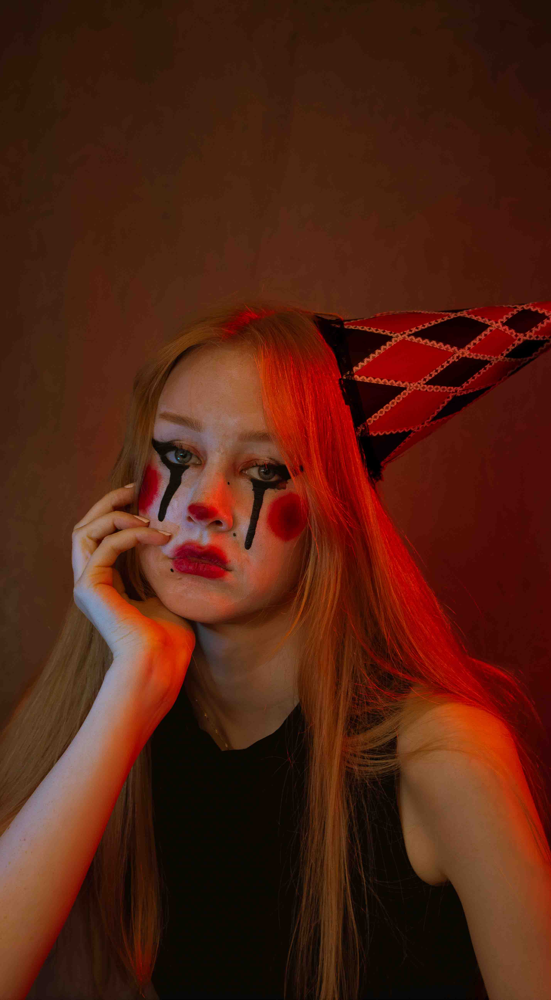
Person 2 steht nun Komplett im Fokus. Man merkt nochmals den Kontrast zwischen den zwei Personen. Während Person 1 eher traurig und zurückgezogen wird, erscheint Person 2 selbstbewusster, obwohl durch das MakeUp auch hier eine starke emotionale Wirkung erzeugt wird. Auch der Hut fällt weiter ab was die heruntergezogenheit mehr zum Ausdruck bringt.
Person 2 steht nun Komplett im Fokus. Man merkt nochmals den Kontrast zwischen den zwei Personen. Während Person 1 eher traurig und zurückgezogen wird, erscheint Person 2 selbstbewusster, obwohl durch das MakeUp auch hier eine starke emotionale Wirkung erzeugt wird. Auch der Hut fällt weiter ab was die heruntergezogenheit mehr zum Ausdruck bringt.
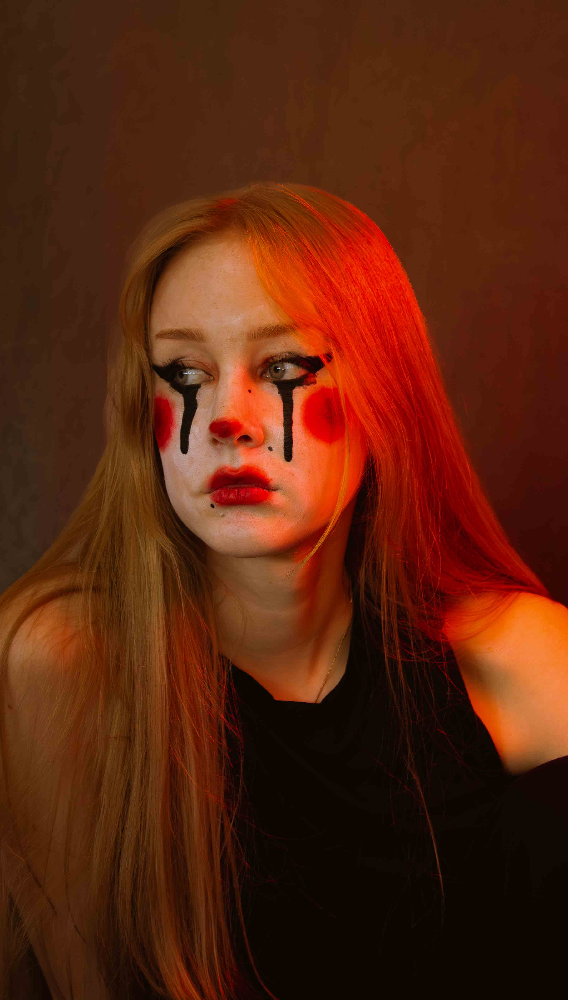
Person 2 ist nun ohne Hut im Fokus. Man merkt, dass die Person auch ohne Hut eine Emotionale Wirkung erzeugt.
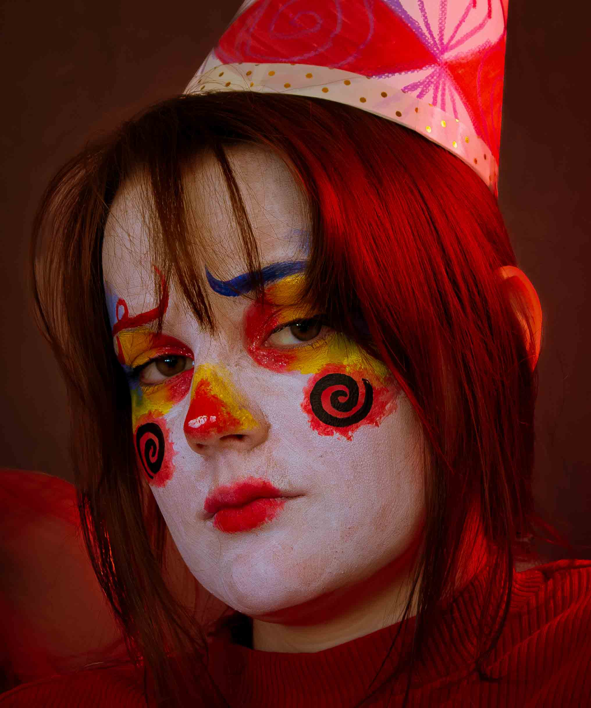
Person 1 kommt zurück in den Fokus und rundet die Serie der Clowns mit einem letzten Blick in die Kamera ab.
Teil 5: In den Sternen
Um die Serie abzuschließen wurden beide Personen nochmals gezeigt, jedoch in einem anderen Kostüm, jedoch mit dem selben MakeUp, um Konsistenz zu bewahren.
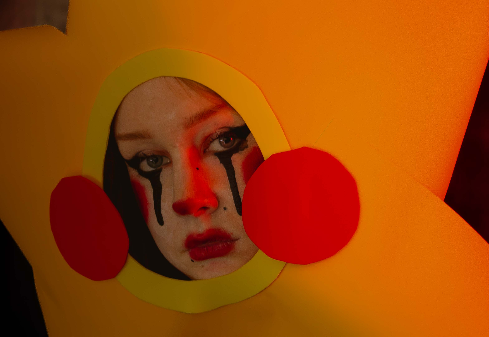
Person 2 wurde nochmals aufgegriffen und schaut mit direktem Blick in die Kamera.
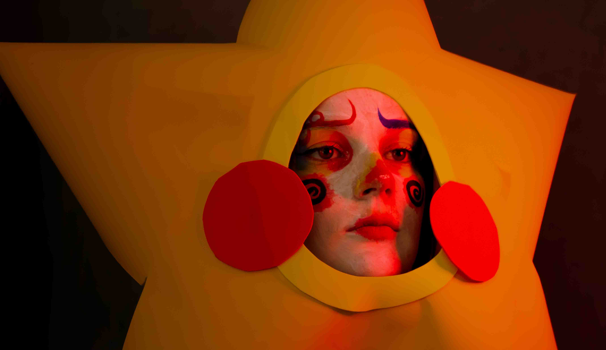
Mit Person 1 schließt sich die Serie der Clowns und Sternen mit einem letzten Blick in die Ferne ab.